01사고지휘체계(ICS)
사고 목표와 임무를 중심으로 지휘·작전·계획·군수·재무행정 기능을 조직하는 공통 관리체계다. 모든 기능을 별도 직위로 즉시 설치해야 한다는 뜻은 아니다.
구별·적용 기능을 위임하기 전에는 사고지휘관이 그 책임을 유지한다. 조직도에서는 상자가 있는지뿐 아니라 현재 누가 각 기능을 맡는지 확인한다.
확인 질문 현재 별도 담당자가 없는 기능은 누가 책임지고 있는가?
근거 · 제3장 · ics
현장지휘, 지원, 정책 판단과 공공정보.
네 기능의 개념과 관계를 원문에 따라 정리합니다.
네 기능을 연결하는 공통 체계
번역 기준: 사고(Incident)는 인명·재산 보호를 위한 대응이 필요한 자연적·인위적 발생이다. NIMS에서는 재난·비상상황·계획행사까지 포함하는 포괄적 개념으로 사용한다. 이 노트는 Incident를 사고로 통일한다. 번역 기준과 FEMA 보충 용어 보기 →
지휘 및 조정(Command and Coordination)은 현장 전술, 대응 지원, 정책적 판단, 대국민 소통을 연결하는 체계다. 공통 용어·조직·절차로 여러 기관의 활동을 맞추면서 각 기관의 권한·책임을 유지한다. 사고지휘체계(Incident Command System, ICS), 비상운영센터(Emergency Operations Center, EOC), 다기관조정그룹(Multiagency Coordination Group, MAC Group), 합동정보시스템(Joint Information System, JIS)이 이 기능의 실행과 연계에 참여한다. (인쇄 p.19)
네 책임 영역과 네 구성요소가 배타적으로 일대일 대응한다는 뜻은 아니다. 원문은 MACS가 구성요소 사이에서 이 책임 영역을 조정한다고 설명한다. (p.19)
| 구성요소 | 주된 역할 | 유의사항 |
|---|---|---|
| ICS | 현장 사고관리의 지휘·통제·조정 | ICS에도 조정 기능이 있다. ‘지휘는 ICS, 조정은 EOC’라는 완전한 이분법은 부정확하다. pp.24–25 |
| EOC | 정보 수집·분석·공유, 자원 요청·배분·추적, 계획 조정 | 일부 운영을 맡고, 현장지휘가 수립되지 않은 경우 전술작전을 지휘할 수 있다. p.35 |
| MAC Group | 정책 수준의 공동 판단, 자원 우선순위·배분 | 현장지휘 기능을 수행하거나 작전·조정·출동조직의 기본 기능을 대체하지 않는다. p.40 |
| JIS | 기관 간 메시지와 공보활동의 통합·조정 | 현장/전술·센터/조정·정책/전략의 세 수준을 가로지른다. p.42 |
다기관조정체계(MACS)는 이 네 책임 영역을 구성체계 사이에서 조정하는 체계다. MAC Group은 그 구성요소 하나이며, MACS 전체와 같은 뜻이 아니다. (p.19)
규모가 달라도 함께 쓰는 관리 원칙
| 번호 | 관리특성 | 핵심 의미 |
|---|---|---|
| 1 | 공통 용어(Common Terminology) | 조직기능·자원·시설 명칭을 표준화한다. |
| 2 | 모듈형 조직(Modular Organization) | 규모·복잡성·위험에 따라 기능을 확장하고 위임한다. 미배치 기능의 책임은 상위 감독자에게 남는다. |
| 3 | 목표관리(Management by Objectives) | 측정 가능한 목표, 전략·전술·임무, 배정, 결과 기록을 연결한다. |
| 4 | 사고대응계획 수립(Incident Action Planning) | 목표·전술·임무를 계획으로 전달한다. 모든 사고에 대응계획이 필요하지만 모두 서면일 필요는 없다. |
| 5 | 적정 통할범위(Manageable Span of Control) | 감독 능력에 맞게 보고·감독 관계를 구성한다. |
| 6 | 사고시설과 위치(Incident Facilities and Locations) | 상황에 따라 지휘·지원 시설을 정하고 위치를 식별한다. |
| 7 | 종합 자원관리(Comprehensive Resource Management) | 인력·장비·팀·물자·시설의 최신 현황을 관리한다. |
| 8 | 통합 통신(Integrated Communications) | 공통 통신계획과 상호운용 가능한 음성·데이터 연결을 마련한다. |
| 9 | 지휘 수립과 이양(Establishment and Transfer of Command) | 지휘를 초기에 정하고, 이양 시 핵심상황 브리핑과 관련 인원 통지를 수행한다. |
| 10 | 통합지휘(Unified Command) | 공동 승인 목표로 사고을 관리하며 참여 기관의 권한·책임을 유지한다. |
| 11 | 지휘계통과 지휘 일원성(Chain of Command and Unity of Command) | 권한의 계통을 명확히 하고 개인은 한 명에게 보고한다. |
| 12 | 책임성(Accountability) | 출입 확인·계획·개인 책임·통할범위·자원 추적으로 책임을 확보한다. |
| 13 | 출동·배치(Dispatch/Deployment) | 적절한 권한자의 요청과 정식 출동 절차를 따른다. 요청 없는 자발적 배치는 삼간다. |
| 14 | 정보 및 첩보 관리(Information and Intelligence Management) | 사고 관련 정보·첩보를 수집·분석·평가·공유·관리한다. |
공동 목표와 명확한 보고 관계
IC·UC·AC는 사고 규모에 따라 직급이 올라가는 세 단계가 아니다. 지휘 책임을 맡는 개인, 권한 있는 기관이 공동으로 지휘하는 방식, 여러 ICS 조직을 감독하는 조직을 구별한다.
| 구분 | IC | UC | AC |
|---|---|---|---|
| 원어·표현 | 사고지휘관(Incident Commander) | 통합지휘부(Unified Command) | 광역지휘부(Area Command) |
| 개념 | 지휘 책임을 맡는 개인의 직책 | 책임·권한이 있는 기관들이 공동 지휘하는 방식과 지휘부 | 복수 ICS 조직의 관리를 감독하는 조직 |
| 관리 범위 | 하나의 ICS 조직. 사고복합체를 맡을 수도 있다. | 하나의 통합 ICS 조직. 사고복합체를 맡을 수도 있다. | 복수 동시 사고 또는 여러 ICS 조직이 필요한 매우 복잡한 사고 |
| 목표·계획 | 부여된 권한 내에서 사고 목표를 설정하고 대응을 총괄 | 공동 목표·우선순위·전략과 하나의 통합 IAP를 정함 | 광역 목표를 설정하고 사고별 목표·전략·자원 우선순위를 조정 |
| 전술 수행 | 해당 ICS 조직의 작전부서가 수행 | 해당 ICS 조직의 작전부서가 수행 | 개별 IC·UC가 맡는 ICS 조직에서 수행 |
| 권한의 경계 | 지정된 사고지휘관의 권한·책임 | 참여기관은 자기 인력·자원에 대한 권한·책임·책무 유지 | 개별 ICS 지휘부를 하나로 합치지 않고 관리를 감독 |
| 원문 근거 | p.24, p.26 | pp.25–26 | pp.33–34 |
단일 관할에서 관할권·기능상 책임의 중복이 없는 경우 권한 있는 기관이 단일 사고지휘관을 지정한다. 여러 관할·기관이 관여하더라도 서로 합의하면 단일 IC를 지정할 수 있다. 따라서 기관 참여 수만으로 UC 적용 여부를 판단하지 않는다. (p.24)
UC는 관할권 또는 사고에 대한 권한·기능상 책임을 가진 기관이 공통 목표·전략과 하나의 IAP로 사고를 공동 관리하도록 한다. UC 참여기관은 협업 과정(collaborative process)을 통해 우선순위와 목표를 정한다. 각 기관의 인력·자원에 대한 권한과 책임은 유지된다. (pp.25–26)
지휘 기능은 하나의 현장지휘소(ICP), 통합 목표, 단일 자원 주문체계, 작전기간별 통합 사고대응계획(IAP)을 설정한다. 필요한 일반참모의 각 기능에는 한 명의 부서장을 둔다. 기관마다 별도 작전부서장을 두거나 서로 독립된 지휘소에서 각자 명령하는 뜻이 아니다. 이 지휘 기능의 책임은 단일 IC와 UC 모두에 적용된다. (p.25)
권한·관할 책임이 없는 지원·협조기관도 사고 대응에 참여할 수 있다. 단순히 참여했다는 이유만으로 모두 UC 구성원이 되는 것은 아니다. (p.26)
AC는 여러 동시 사고 또는 복수 ICS 조직이 필요한 매우 복잡한 사고의 관리를 감독한다. 여러 현장지휘소가 같은 부족한 자원을 요청하는 상황, 사고의 복잡성, 통할범위를 고려해 설치한다. 사고가 여러 건이라는 사실만으로 자동 설치하는 것은 아니다. 사고 유형·자원 수요가 서로 다르면 별도 사고로 관리하고 EOC·MAC Group 등의 조정 지원을 받을 수 있다. (pp.33–34)
AC는 사고별 목표·전략의 조정, 변화하는 우선순위에 따른 자원 배분·재배분, IC·UC의 적절한 사고관리 감독, 통신·데이터 조정, 부족한 자원 수요 파악·보고를 맡는다. 개별 현장의 세부 전술은 각 ICS 조직이 담당한다. (p.34)
다관할 운영 가능성이 높은 특성 때문에 AC는 통합광역지휘부(Unified Area Command)로 구성되는 경우가 많다. UC와 같은 원리로 공동 지휘한다. (p.33)
개념 적용 예시(가상): 지정된 IC가 공장 화재를 관리하는 경우, 권한·기능상 책임을 가진 기관들이 화학물질 누출의 목표를 UC에서 함께 정하는 경우, 여러 독립 ICS가 운영되는 산불에서 공통 항공자원 수요를 AC가 조정하는 경우를 생각할 수 있다. 실제 지휘방식은 해당 기관의 권한과 사고 조건에 따라 판단한다.
ICS는 지휘(Command), 작전(Operations), 계획(Planning), 지원(Logistics), 재무·행정(Finance/Administration)의 다섯 주요 기능으로 구성된다. 사고지휘관(IC) 또는 통합지휘부(UC)는 사고의 필요에 따라 참모와 부서장을 배치한다. (pp.24, 27–28)
| 구분 | 지휘참모(Command Staff) | 일반참모(General Staff) |
|---|---|---|
| 구성 | 공보관·안전담당관·연락관 및 필요에 따른 추가 직책·자문가 | 작전·계획·지원·재무행정 부서장 |
| 역할 | 지휘 기능을 공보·안전·기관 연락 등의 전문 영역에서 지원 | 기능별 부서를 책임지고 사고 목표의 실행을 조직 |
| 보고 관계 | IC·UC에 직접 보고 | IC·UC 아래에서 각 기능을 책임짐 |
| 편성 | 필요에 따라 배치하고 보조 인력을 둘 수 있음 | 필요에 따라 부서장을 배치하고 부책임자를 둘 수 있음 |
IC·UC는 지휘 기능을 지원하도록 지휘참모를 지정한다. 일반적으로 공보관, 안전담당관, 연락관이 지휘부에 직접 보고하며 필요하면 보조 인력을 둔다. 사고 특성에 따라 추가 자문가를 임명할 수 있다. (p.27)
공보관은 대중·언론 및 사고 관련 정보가 필요한 다른 기관과 소통하는 창구다. (p.27)
안전담당관은 사고 대응활동을 모니터링하고 대응인력의 건강·안전에 관해 IC·UC에 조언한다. (p.27)
연락관은 UC에 포함되지 않은 정부기관·관할기관·비정부기구(NGO)·민간조직 대표와 사고지휘부를 연결하는 창구다. (p.27)
기관 대표의 참여 통로를 제공하는 역할이며, 기관 대표가 모두 UC의 구성원이 되는 것은 아니다. (pp.26–27)
사고 특성과 지휘부가 정한 요구에 따라 지휘참모 직책을 추가할 수 있다. IC·UC는 기술전문가를 지휘 자문가로 임명할 수 있다. 자문가(advisor)는 자문 역할을 수행하며 사고 활동을 지휘할 권한이 없다. 따라서 안전담당관처럼 업무상 권한을 가진 담당관(officer)과 구분한다. (p.28)
일반참모는 작전·계획·지원·재무행정 부서장으로 구성된다. IC·UC가 필요에 따라 부서장을 배치한다. 부서장이 지정되기 전까지 해당 기능은 IC·UC가 책임진다. 부서장은 필요하면 한 명 이상의 부책임자를 둘 수 있다. (p.28)
작전부서는 IC·UC가 설정한 사고 목표를 달성하도록 전술활동을 계획하고 수행한다. 목표는 일반적으로 인명 보호, 즉각적인 위험 감소, 재산·환경 보호, 상황 통제 및 정상 활동의 회복에 초점을 둔다. (p.28)
IC·UC는 현재 사고 우선순위에 따라 작전부서장(Operations Section Chief)을 선정하고, 사고가 진행됨에 따라 그 선정을 주기적으로 검토한다. 작전부서장은 사고의 성격·범위, 참여 관할·기관, 우선순위·목표·전략에 맞춰 부서를 구성한다.
계획부서는 사고 상황정보를 수집·평가·전파해 IC·UC와 대응인력에게 제공한다. 상황보고서를 작성하고 상황정보를 표시하며 배치된 자원의 상태를 관리한다. 사고대응계획 수립 과정을 진행하고, 다른 부서·지휘참모의 의견과 IC·UC의 지침을 바탕으로 IAP를 작성한다. (pp.28–29)
계획부서는 여러 부서의 내용을 모아 IAP를 작성하며, 지휘부는 각 작전기간의 통합 IAP를 승인한다. (pp.25, 28–29)
지원부서는 자원 주문을 포함해 사고관리에 필요한 서비스와 지원을 제공한다. 시설과 시설·인력의 보안, 운송, 물품, 장비 정비·연료, 급식, 통신·정보기술(IT), 대응인력의 의료서비스를 담당한다. (p.29)
여기서 의료서비스의 대상은 사고 대응인력이다. (p.29)
IC·UC는 현장 또는 사고별 재무·행정 지원이 필요할 때 이 부서를 설치한다. 인력의 근무시간 기록, 임차 협상·공급업체 계약, 청구 처리, 사고 비용 추적·분석을 담당한다. 계획·지원부서와 긴밀히 협력해 활동기록과 재무문서를 대조한다. (pp.29–30)
여러 재원으로 대응하는 크고 복잡한 사고에서는 재원별 자금과 발생 비용을 추적·보고한다. 이를 통해 IC·UC가 필요를 예측하고 추가 자금을 요청할 수 있도록 한다.
일반적으로 계획부서는 작전정보를 수집·분석하고 상황인식을 공유하며, 작전부서는 전술활동을 수행한다. 범죄·테러 또는 역학조사처럼 정보 수집과 수사가 집중적으로 필요한 사고에서는 IC·UC가 정보·수사 책임의 배치를 조정할 수 있다. (pp.30–31)
IC·UC가 이 기능의 범위와 조직 내 배치 위치를 최종 결정한다. 배치 선택지는 NIMS Appendix A, Tab 6에서 다룬다. (p.31)
| 업무 | 역할 연결 |
|---|---|
| IAP 수립 | 작전부서가 전술 내용을 제공하고, 계획부서가 다른 부서·지휘참모의 의견을 통합해 작성하며, IC·UC가 승인 |
| 위험 관리 | 안전담당관이 위험 평가·전달·완화 체계와 안전계획을 마련하고 불안전한 행위를 중단·예방. 최종 책임은 IC·UC와 각급 감독자 |
| 기관 참여 | UC의 권한 있는 구성원은 공동 목표를 정하고, UC 외 지원·협조기관 대표는 연락관을 통해 참여 |
| 정보 공개 | 공보관이 정보를 수집·검증·조정·전파하고, IC·UC가 공개 승인 |
| 활동·비용 기록 | 계획·지원부서의 활동기록과 재무·행정부서의 재무문서를 대조 |
참고: NIMS 제3장 인쇄 pp.27–31. 그림 3: 단일 IC 조직과 그림 4: UC 조직에서 보고 관계를 함께 확인한다.
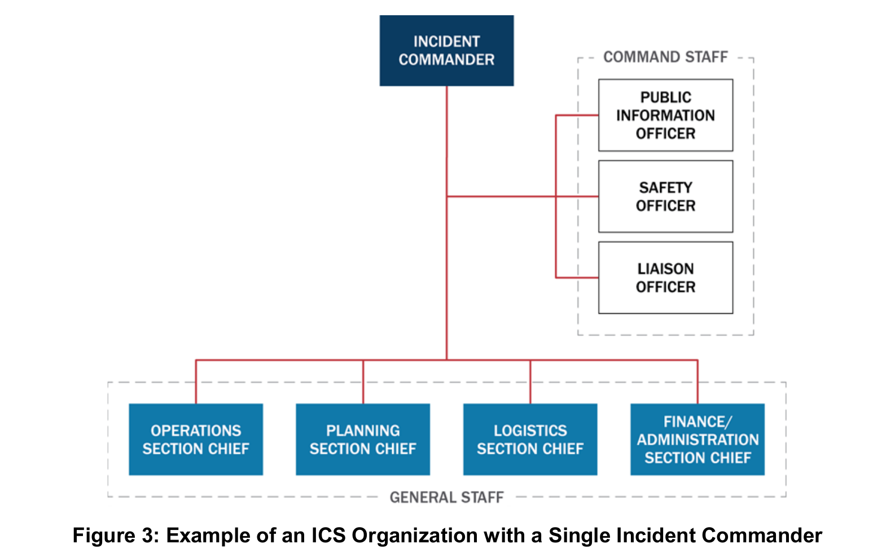
그림 크게 보기 ↗읽는 법한 명의 사고지휘관 아래에서 지휘참모와 네 기능 부서의 보고 관계를 확인하세요.
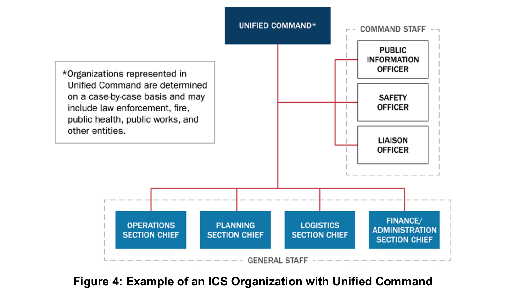
그림 크게 보기 ↗읽는 법공동 지휘부 아래에서도 기능조직과 개인별 보고 관계는 명확하게 유지됩니다.
| 명칭 | 역할 | 인쇄 페이지 |
|---|---|---|
| 현장지휘소(Incident Command Post, ICP) | 현장 전술 수준 지휘·계획의 거점 | 31 |
| 대기구역(Staging Area) | 임무 배정을 기다리는 자원을 배치·추적. 작전부서가 관리한다. | 31 |
| 사고기지(Incident Base) | 주요 지원활동의 거점. ICP와 같은 위치일 수 있다. | 31 |
| 캠프(Camp) | 사고기지의 위성 지원거점. 식사·숙박·위생 등을 제공한다. | 32 |
| 사고관리팀(Incident Management Team, IMT) | ICS 자격 인력의 편성팀. 사고관리 또는 지원 임무를 맡는다. | 32 |
| 사고관리지원팀(Incident Management Assistance Team, IMAT) | 현장·피해 관할 지원을 강조하는 팀. 일부 자원·대응 활동의 지휘통제 권한도 가질 수 있다. | 33 |
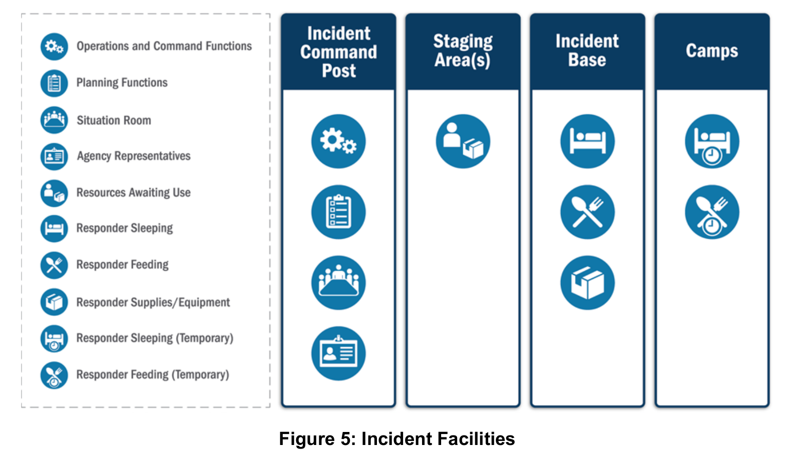
그림 크게 보기 ↗읽는 법ICP·기지·대기구역·캠프의 역할과 제공하는 지원 기능을 비교하세요.
하나로 묶기와 여러 지휘부 감독하기
| 구분 | 사고복합체(Incident Complex) | 광역지휘부(Area Command) |
|---|---|---|
| 관리 대상 | 같은 일반 지역의 둘 이상 사고 | 복수 사고 또는 복수 ICS가 필요한 매우 복잡한 사고 |
| ICS 조직 | 하나 | 여러 개 |
| 지휘 구성 | 하나의 IC 또는 UC | 각 ICS의 IC·UC를 AC 또는 통합광역지휘부가 감독 |
| 편성·목적 | 개별 사고를 작전부서의 Branch·Division으로 편성. 통합관리의 인력·지원 효율을 고려 | 각 ICS 조직을 유지하며 목표 충돌·부족한 자원 경쟁·관리 범위를 조정 |
| 주요 조건 | 하나의 지휘·일반참모가 충분히 관리할 수 있어야 함. 대형화될 사고는 별도 ICS로 관리 | 복수 지휘소의 자원 경쟁·복잡성·통할범위를 고려 |
| 근거 | p.33 | pp.33–34 |
| 구성요소 | 주된 역할 | 유의사항 |
|---|---|---|
| AC | 복수 사고지휘조직의 관리 감독, 목표·전략 및 자원 배분 조정 | 개별 ICS 조직을 하나로 합치지 않음 |
| EOC | 정보·자원·계획 등 대응 지원의 조정 | AC와 같은 현장 상위지휘부로 정의하지 않음. 현장지휘가 수립되지 않았을 때 전술작전을 지휘할 수 있는 예외는 p.35에 별도 설명 |
| MAC Group | AC·EOC에 정책 지침·전략 방향 제공, 정책 수준의 자원 우선순위·배분 | 현장지휘나 작전·조정·출동조직의 기본 기능을 대체하지 않음. pp.40–41 |
그림 6을 읽을 때: 도식은 AC 아래 복수 사고지휘부와 EOC의 지원 조정을 보여준다. MAC Group의 정책 역할은 그림 옆 캡션·본문에서 설명되며, 그림 안에 별도 MAC Group 상자가 있는 것은 아니다. (p.34)
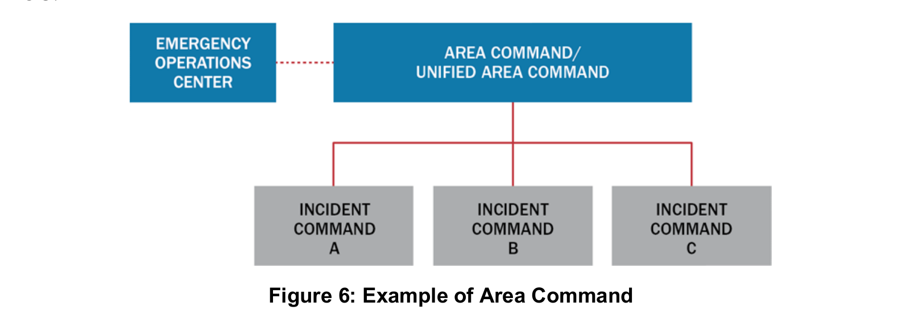
그림 크게 보기 ↗읽는 법복수 사고지휘부의 감독 관계와 EOC의 지원 조정 관계를 구별하세요. MAC Group의 정책 역할은 원문 설명에 제시됩니다.
현장이 대응할 수 있는 조건을 확보하기
EOC는 고정 시설·임시 시설·가상 구조로 운영할 수 있다. 부서운영센터(Departmental Operations Center, DOC)는 주로 자기 기관의 자원·작전을 관리한다. NIMS가 다루는 EOC는 본질적으로 여러 분야의 협력 활동이다. (p.35)
세 가지 조직형태는 예시이며 임무·권한·인력·참여기관·시설·통신 등을 고려해 선택한다. 모두 NIMS 관리특성을 따른다. (pp.36–38)
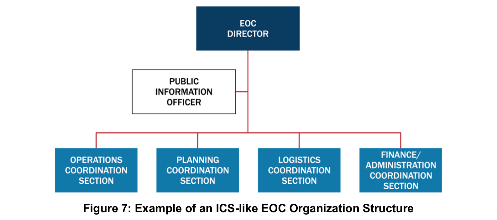
그림 크게 보기 ↗읽는 법현장 ICS와 유사한 구조지만 부서 명칭은 조정 기능을 강조합니다.
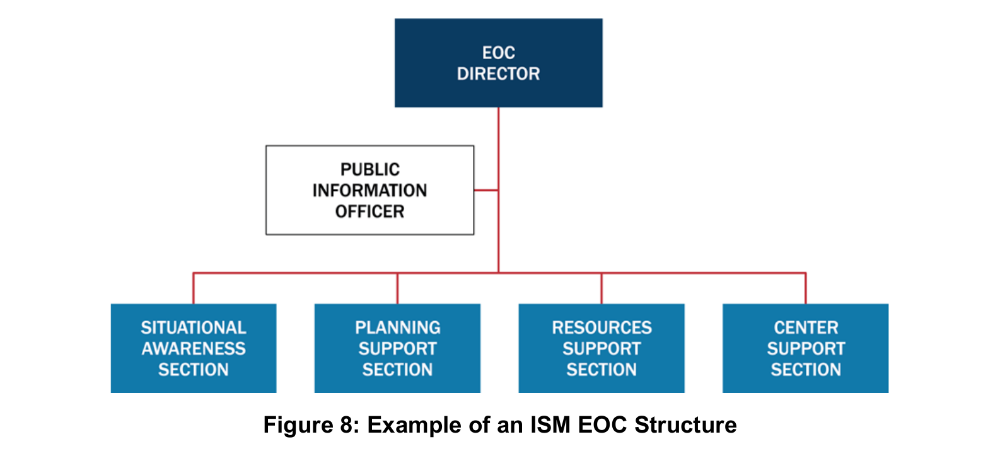
그림 크게 보기 ↗읽는 법상황인식·계획지원·자원지원·센터지원의 네 기능을 확인하세요.
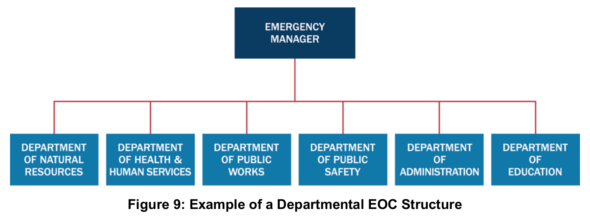
그림 크게 보기 ↗읽는 법평시 부서가 참여하고 비상관리 책임자가 기관 간 활동을 조정합니다.
| 수준 | 원문 명칭 | 내용 |
|---|---|---|
| 3 | Normal Operations/Steady State | 정상 운영, 평시 감시·경보 |
| 2 | Enhanced Steady-State/Partial Activation | 일부 구성원이 신뢰할 만한 위협을 감시하거나 발전 가능성이 있는 사고을 지원 |
| 1 | Full Activation | 주요 사고·신뢰할 만한 위협에 대응하도록 지원기관 인력을 포함한 EOC팀 가동 |
외부 소통에는 표준 가동 명칭을 사용한다. 내부에서는 숫자·색상도 쓸 수 있으며, 숫자를 쓰면 작아질수록 높은 가동 수준이 되도록 한다. 각 수준은 대면·원격 참여가 가능하다. 가동 해제(Deactivation)는 지원·조정 수요가 줄거나 다른 체계로 수행 가능할 때 단계적으로 할 수 있으며, 자원 동원해제·잔여 활동 이관·사후 검토 계획을 포함한다. (pp.38–39)
희소 자원의 우선순위 결정하기
관할의 법·정책에 따라 MAC Group이 추가 자원을 승인하거나 EOC·현장지휘부에 지침을 제공할 수 있다. 현장지휘 기능을 대신한다는 뜻은 아니다. (p.40)
MAC Group은 기관 관리자·고위 책임자·그 대리인 등으로 구성하고 대체로 합의에 기초해 판단한다. 대리인은 자기 조직을 대표하거나 사고활동에 자원·예산을 투입할 권한을 받아야 한다. 자금·물자가 없어도 관계·정치적 영향력·전문성을 가진 기관이 참여할 수 있다. 가상 방식으로 운영할 수 있으며 EOC 인력이 지원하거나 일부 활동을 수행할 수도 있다. (pp.40–41)
여러 기관의 정보를 일관된 메시지로
JIS는 공보의 과정·절차·도구를 연결하는 체계이며, 합동정보센터(Joint Information Center, JIC)는 그 활동을 수행하는 거점이다. JIC는 독립 거점·사고현장·EOC 구성요소로 설치할 수 있다. 원칙적으로 단일 JIC를 두지만 넓은 지역·복합 사고에서는 복수의 물리적 또는 가상 JIC를 둘 수 있으며 메시지와 최종 공개 권한을 조정해야 한다. (pp.42–44)
| 유형 | 기능 |
|---|---|
| 사고형(Incident JIC) | 현장 관련 PIO의 공동 근무 거점. EOC에 둘 수 있다. |
| 가상형(Virtual JIC) | 물리적 공동 근무가 어려울 때 기술·통신 규약으로 연결한다. |
| 위성형(Satellite JIC) | 주 JIC를 지원하며 그 통제 아래 운영한다. |
| 광역형(Area JIC) | 넓은 지역의 복수 사고 ICS를 지원한다. |
| 국가형(National JIC) | 통상 장기 사고에서 연방 사고관리를 지원한다. |
정보처리는 수집(Gathering)→검증(Verifying)→조정(Coordinating)→전파(Disseminating)의 지속적 순환이다. 공통 메시지와 권한자의 승인을 조정하고, 승인 절차는 적시에 공개할 수 있도록 간소화한다. 영어 능력·장애·접근 및 기능상 필요를 고려한 다양한 형식을 제공한다. 기관별 정책·프로그램 정보 통제권은 유지한다. 소문·부정확한 정보·정보 공백도 모니터링한다. (pp.43–46)
미국의 사고지휘체계(Incident Command System, ICS)와 한국의 긴급구조통제단을 비교할 때는 조직도, 권한, 실제 운영을 함께 보아야 한다. ICS는 여러 종류·규모의 사고에 적용하는 표준 관리체계이고, 지역긴급구조통제단은 한국 법률에 따라 설치하는 조직이다. 따라서 두 이름을 번역어처럼 바꾸어 쓰기보다, 어떤 기능을 어떻게 연결하는지 비교하는 편이 정확하다.
이 절은 국내 학술논문 네 편의 전문과 「재난 및 안전관리 기본법」 제50·52조를 확인해 덧붙인 학습 해설이다. 2008·2016년의 한미 제도·편제 비교 연구와 2013·2019년의 국내 조직문화·운영 연구를 구별한다. 법령은 2026년 10월 24일 확인한 2026년 7월 22일 시행본이다. 아래 비교표·질문은 학습용 종합이며, NIMS 원문이나 한국 법령에 수록된 공식 대응표가 아니다.
| 비교 축 | ICS에서 읽을 내용 | 국내 연구·조문과 연결해 읽을 내용 |
|---|---|---|
| 대상과 범위(Scope) | 여러 종류·규모의 사고와 계획행사에 적용하는 관리체계다. | 법 제50조의 지역통제단은 지역 긴급구조의 총괄·조정, 역할분담과 현장 지휘·통제를 위한 법정 조직이다. NIMS 전체와 통제단 하나를 같은 범위로 놓지 않는다. |
| 지휘 권한(Command Authority) | 단일 사고지휘관 또는 관련 권한·책임을 가진 주체의 통합지휘(Unified Command)를 상황에 맞게 구성한다. 통합지휘와 개인의 단일 보고 관계는 함께 성립한다. | 제52조는 시·군·구통제단장의 긴급구조 지휘와 시·도·중앙통제단장의 직접 지휘 조건을 둔다. 치안사항의 경찰 협의도 별도로 규정한다. 연락관 파견을 미국식 통합지휘의 자동 성립으로 해석하지 않는다. |
| 조직과 기능(Organization and Functions) | 지휘와 작전·계획·군수·재무행정 기능, 공보·안전·연락 역할을 사고 수요에 맞춰 조직한다. | 윤용선 외(2016)는 기관마다 다른 편제를 공보·연락·상황총괄·현장대응·자원지원·대민지원 기능으로 연결하자고 제안했다. 연구의 제안 편제를 현행 법정 조직도로 제시하지 않는다. |
| 목표와 계획(Objectives and Planning) | 공동 목표·전략·전술과 사고행동계획(IAP)을 연결하고 작전기간별로 조정한다. | 국내 조직의 이름만 대응시키지 말고, 기관들이 어떤 목표·임무·변경 사항을 공동으로 확인하는지 살핀다. 이 질문은 ICS 원칙과 국내 연구를 연결한 수업용 적용이다. |
| 지휘와 지원(Command and Support) | 현장 ICS와 EOC·정책 조정·공공정보의 연결을 함께 읽는다. 각 구조의 권한과 상황에 따른 역할을 확인한다. | 양기근(2008)은 통제단과 대책본부의 경계·지원 기능을 핵심 문제로 다뤘다. 현재 제52조 제6·7항에는 협력과 인력·물자 지원 요청 근거가 있다. 국내 대책본부·통합지원본부를 EOC와 법적으로 같은 기관으로 등치하지 않는다. |
| 기관 간 연결과 종료(Coordination and Transition) | 연락·공동정보·자원 상태를 연결하고 지휘 이전과 임무 종료 때 필요한 정보를 넘긴다. | 제52조 제9항의 연락관 파견, 제10항의 활동 종료 협의·통보를 확인한다. 2016년 연구의 단계별 지휘권 이양 설계를 현재 조문의 자동 이양 규칙으로 바꾸지 않는다. |
ICS 조직과 통합지휘 · EOC의 지원과 조정 · 정책 판단과 공공정보
양기근(2008): 지휘조직과 지원조직의 관계를 함께 보자. 미국 ICS·EOC와 한국 통제단·대책본부를 제도적으로 비교한 연구다. 관계·임무 경계, 서로 다른 조직구조, 의사결정권자 지정, 자원관리·지원 기능을 검토한다. 개선안은 현장 대응에 필요한 기능을 먼저 정하고 지휘·지원·총괄조정·정보공유의 연결을 정비하자는 것이다(인쇄 pp.86–87, 94–101).
이 연구를 읽을 때의 질문은 “현장지휘관이 누구인가?”에서 한 걸음 더 나아간다. 그 지휘관이 결정한 임무를 수행하도록 누가 자원을 제공하고, 어떤 결정을 다른 기관과 협의하는가? 연구의 마지막 논의도 미국 모델의 취지를 한국 맥락에 맞게 조정하는 데 초점을 둔다(pp.101–102). 2008년 당시의 법령·편제·정보체계 진단을 현재의 결함이라고 그대로 옮기지는 않는다. 논문 서지와 원문 경로.
윤용선·배상원·임상규(2016): 같은 기능을 맡은 조직끼리 연결하자. 미국 ICS를 참고해 소방·해경·군·경찰·지자체의 편제를 비교하고 한국형 대응·수습 표준편제를 제안한다. 이름이 달라도 기능이 유사한 조직을 찾아 공통 틀로 연결하고, 규모와 특수성에 따라 축소·확대하자는 접근이다(pp.41–44). Table 2는 비교한 국내 기관들의 편제 차이를, Figure 5는 연구가 제안한 기본 틀을 보여준다.
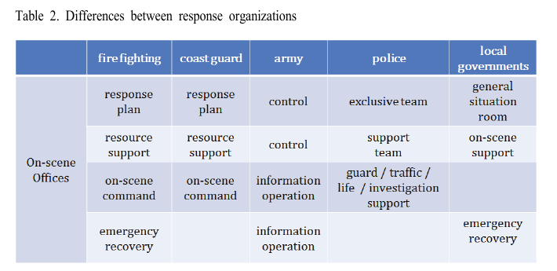
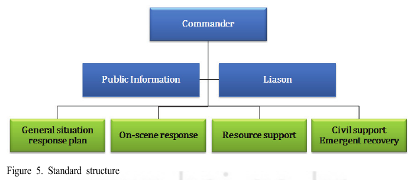
이 제안은 ICS의 네 일반참모 기능을 한국 기관에 그대로 복사한 것이 아니다. 대민지원과 긴급복구를 포함해 국내 대응·수습 기능을 재구성했다. 따라서 기능의 유사성과 조직·권한의 동일성을 구별해야 한다. 연구는 SOP·통합지침·훈련 시나리오 등 후속 과제도 남긴다(p.44). 조직도를 제안했다는 사실과 실제 대응 성과가 검증되었다는 사실은 다르다. 학회 원문.
양기근·류상일(2013): 조직문화와 규범의 차이도 살피자. 미국과의 직접 성과 비교가 아니라 통제단·대책본부 관계를 조직문화와 규범 인식에서 검토한 연구다. 설문 응답79명 중 전라지역78명이므로 전국 전체의 차이로 확대하기 어렵다. 저자들은 상호 접촉과 인사교류, 공동참여 훈련 등을 제안한다(pp.73–80).
이 연구에서 교재에 가져올 부분은 조직 간 관계를 업무 규칙과 상호 이해의 문제까지 넓혀 보는 관점이다. 다만 방법 절의 ‘긍정1→부정5’ 척도 설명과 큰 평균을 더 높은 문화 인식으로 읽는 본문의 방향이 어긋나므로, 어느 집단의 문화가 더 높다는 수치 해석은 보류한다. 원문 내부 충돌을 임의로 고쳐 새로운 결론을 만들지 않는다. 학회 원문.
채진·배영환(2019): 전문인력·협력·자원·예산을 함께 보자. 소방공무원457명의 설문 응답으로 운영 관련 요인을 분석한 국내 연구다. 12개 독립변수를 넣은 모형에서 전문가 양성(β=.309), 유관기관 협력(.195), 자원지원(.117), 운영예산(.115)이 유의한 변수로 보고된다. Table 3의 순서는 이 모형의 표준화계수 크기를 비교한 결과다(p.133).
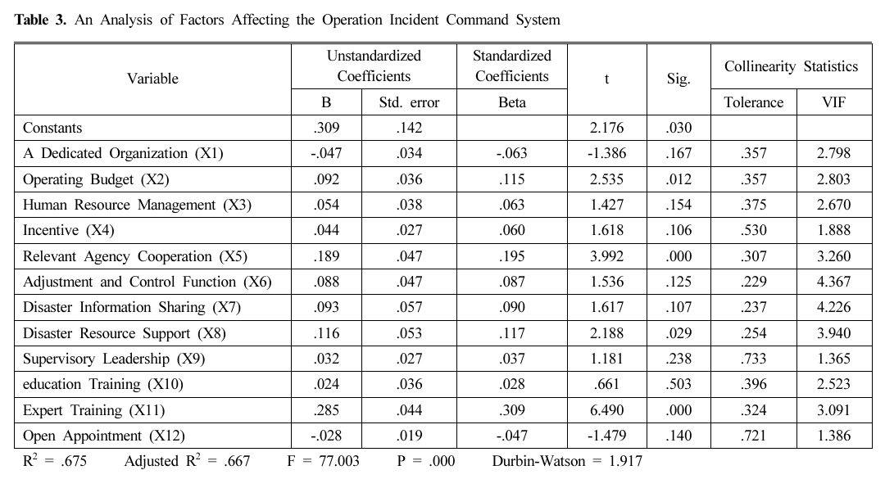
이 결과는 설문 인식 사이의 통계적 관계다. 특정 정책을 시행하면 피해가 얼마나 줄어드는지, 예산을 어떤 비율로 배분해야 하는지를 보여주는 결과는 아니다. 전문가 양성과 일반 교육·훈련은 별도 변수이며, 후자가 이 모형에서 유의하지 않았다고 교육·훈련이 불필요하다고 결론내릴 수도 없다. 교재에서는 “각 기능을 맡을 사람이 실제로 준비되어 있고 협력·자원·예산이 뒷받침되는가?”라는 점검 질문으로 활용한다. 학회 논문·DOI.
과거 연구의 진단을 읽은 뒤에는 관련 규정이 현재 어떻게 되어 있는지 다시 확인한다. 이번에 확인한 법 제50·52조에서는 다음을 구별할 수 있다.
이 규정들이 있다는 사실과 실제 현장에서 잘 작동한다는 평가는 다른 근거를 요구한다. 과거의 문제 제기 → 현재의 제도적 장치 → 실제 운영 기록을 구별하면, 이미 생긴 규정을 없는 것처럼 설명하거나 규정의 존재만으로 문제 해결을 선언하는 오류를 줄일 수 있다. 제50조 · 제52조.
가상 상황: 공장 화재가 인근 지역의 대피와 다수 부상자 대응으로 확대되어 소방·경찰·지자체·의료기관이 함께 활동한다. 실제 사고를 재구성한 사례가 아니라, 이 절의 개념을 적용하기 위한 가정이다.
복습 질문: “통제단 조직도에 ICS와 비슷한 기능이 있다”는 설명만으로 충분한가? 권한의 범위, 공동 목표와 계획, 지원 요청·정보공유, 실제 수행 인력, 종료 협의에서 각각 추가로 확인할 항목을 하나씩 제시하라.
답안의 방향: 기능의 존재와 수행을 구별하고, 원문에 확인된 제도·연구 결과와 가상 상황에서 제안한 절차를 구별하면 된다. 특정 기관을 EOC나 Unified Command에 일대일로 대응시키는 답을 정답으로 고정하지 않는다.
먼저 제3장의 ICS와 EOC를 읽고, 양기근(2008)의 역할·지원 관계, 윤용선 외(2016)의 공통 기능과 제안 편제, 두 운영 연구의 적용 조건 순으로 연결한다. 현재 조문은 연구의 시점 차이를 확인하는 별도 근거다. 네 연구의 결과를 미국 체계의 보편적 우월성이나 한국 통제단의 현재 실패를 증명하는 하나의 실증 결과로 합치지 않는다.
지역 대응에서 상호원조와 연방 지원으로
지역에서 확보할 수 없는 자원은 상호원조와 주·부족·영토·주간 지원으로 확대한다. 연방 개입은 주지사·부족 지도자의 요청 승인, 연방 이해관계, 법률상 권한·의무 등의 조건에 따른다. 연방은 지원 역할을 수행할 수 있고, 연방 소유지·주된 연방 관할 등에서는 주도할 수도 있다. Figure 10은 주로 지원 역할을 하는 경우의 통합을 보여주며 모든 사고의 고정 지휘구조가 아니다. (pp.47–49)
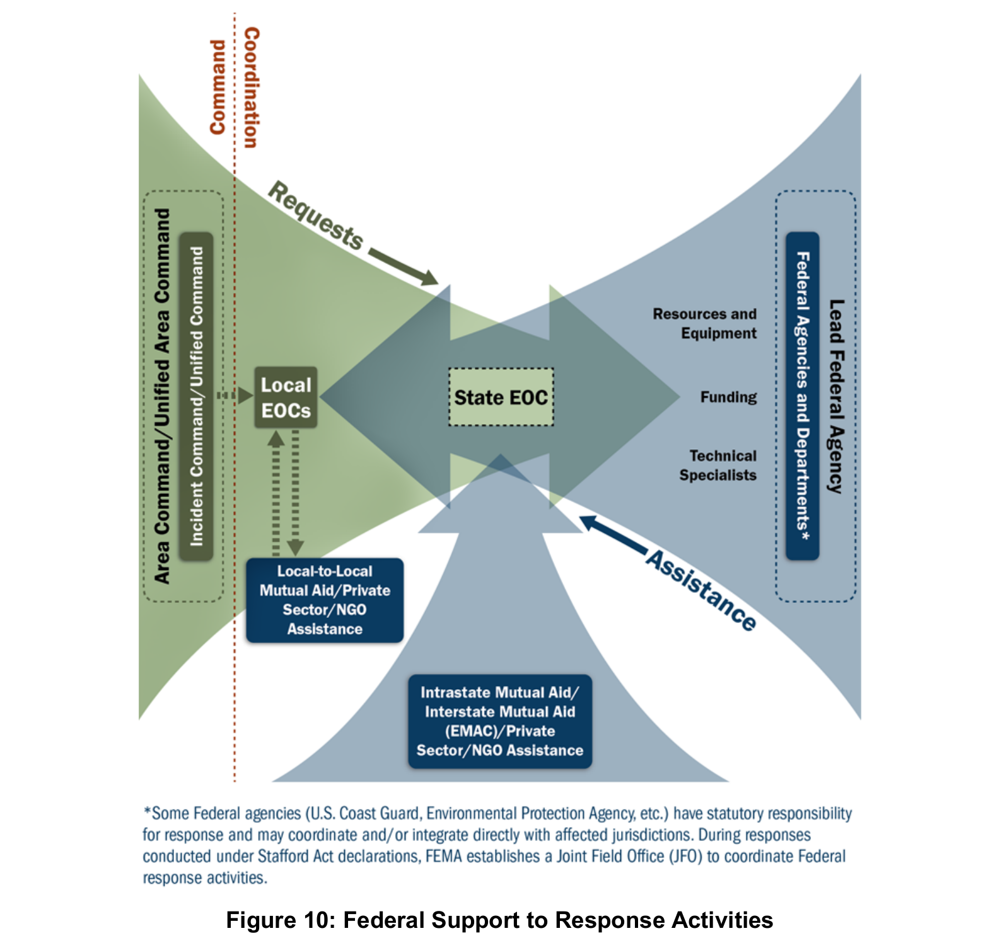
그림 크게 보기 ↗읽는 법요청과 지원의 흐름을 따라 읽으세요. 연방정부가 주로 지원하는 경우를 설명하는 그림입니다.
사고의 범위와 함께 일하는 방식
사고(Incident)는 인명 또는 재산 보호를 위한 대응이 필요한 자연적·인위적 발생을 뜻한다. NIMS에서는 재난·비상상황·계획행사까지 포함하는 포괄적 개념으로 사용한다. 계획행사는 대규모 행사에 한정하지 않는다. (NIMS 용어집 인쇄 p.64 / 전체 PDF p.74)
| 원어 | 이 노트의 표현 |
|---|---|
| Incident | 사고 |
| Incident Management | 사고관리 |
| Incident Command System (ICS) | 사고지휘체계 |
| Incident Commander | 사고지휘관 |
| Incident Command Post (ICP) | 현장지휘소 |
| Incident Action Plan (IAP) | 사고대응계획 |
| Incident Action Planning | 사고대응계획 수립 |
| Incident Management Team (IMT) | 사고관리팀 |
| Incident Management Assistance Team (IMAT) | 사고관리지원팀 |
| Incident Complex | 사고복합체 |
두 영어 용어는 번역어만으로 구분하지 않고 의미와 적용 범위를 함께 읽는다.
| 구분 | Incident | Accident |
|---|---|---|
| 강조점 | NIMS에서 대응·관리가 필요한 발생 또는 상황 | 일반적인 영어 용법에서 예기치 않은 사고 |
| 적용 예 | 대응이 필요한 교통사고, 재난, 비상상황, 계획행사 | 교통사고·충돌사고 같은 구체적인 사고 |
| 관계 | 대응이 필요한 Accident를 Incident로 관리할 수 있다. | 모든 Incident가 Accident인 것은 아니다. |
FEMA IS-288.a 보충 교육자료의 「State and Local VOAD」는 자원봉사기관 협의체(VOAD)가 기관별 자율성을 유지하며 함께 일하기 위한 네 원칙을 설명한다. NIMS 제3장의 정의문과 출처를 구분해서 읽는다. (IS-288.a 인쇄 IG-19 / PDF 21쪽)
| 용어 | 핵심 의미 |
|---|---|
| 협조(Cooperation) | 구성기관 간 상호 신뢰와 팀워크를 형성하고 정보를 공유할 장을 마련한다. |
| 소통(Communication) | 이용 가능한 서비스 정보를 효율적으로 전달하는 정보 중개 창구 역할을 한다. |
| 조정(Coordination) | 서비스 제공의 효율성을 최대화하고 노력의 중복을 방지한다. |
| 협업(Collaboration) | 미충족 수요에 대응하도록 구호활동에서 파트너 관계를 장려하고 자산·자원관리 역량을 보강한다. |
Cooperation에도 정보 공유가 포함되므로 네 기능은 완전히 배타적이지 않다. 세 용어만 비교하더라도 원자료는 Communication을 포함한 4Cs라는 점을 유지한다. 이 네 원칙을 기관 독립성이 사라지는 순서나 보편적인 관계의 상승 단계로 읽지 않는다.
IS-288.a의 「Differing Organizational Cultures」는 정부가 자체 자산을 임무 부여·지시 등으로 배치하는 것과 자원봉사기관·비정부기관의 자산을 요청(request)하는 것을 구분한다. 자원봉사기관도 정부에 자산을 요청할 수 있다. 파트너의 임무·계획·차이를 이해하고 존중해야 한다. (인쇄 IG-18 / PDF 20쪽)
FEMA IS-913.a Lesson 2 「Building Successful Partnerships」의 「Coordination or Collaboration」은 중요기반시설의 안전·복원력을 위한 파트너십 맥락에서 두 개념을 명시적으로 구분한다.
| 용어 | 정의 | 구별할 초점 |
|---|---|---|
| 조정(Coordination) | 서로 다른 조직이나 집단이 각자의 임무를 서로 조화롭게 수행하는 것. | 기관별 임무의 정렬 |
| 협업(Collaboration) | 공유 목표와 목적을 확인하고 달성하기 위해 함께 창조하거나 함께 일하는 과정. | 공유 목표의 확인·달성 |
같은 자료의 「Importance of Collaboration」은 파트너가 산출물을 만들어 내는 활동으로 노력 결합, 전문성·정보·자원 교환, 공동 의사결정, 결과에 대한 소유권 공유를 설명한다. 산출물은 정보 공유전략·정책 권고·계획문서·새로운 절차일 수 있다.
IS-288.a 「Summary of Unit 3」는 협업을 둘 이상의 주체가 공통 임무를 위해 함께 일하겠다는 공식적이고 지속적인 약속(formal and sustained commitment)을 하는 과정으로 설명한다. 공동 의사결정 참여, 정보·자원·과업 공유, 상대 임무와 다양성 존중, 공동체 의식을 성공 조건으로 제시한다. (인쇄 IG-23 / PDF 25쪽)
IS-913.a의 「Formal vs. Informal Partnerships」와 「Duration of Partnerships」는 공식·비공식 구조와 특정 기간·목표에 한정된 파트너십을 모두 다룬다. 협업의 약속에 대한 요약과 파트너십의 조직 형태·기간은 설명 대상이 다르므로 직접 모순으로 단정하지 않는다. 동시에 ‘공식적·지속적’이라는 조건을 FEMA 전체의 단일 필수 요건으로 일반화하지도 않는다.
IS-913.a의 파트너십 구축 절차는 적절한 파트너 찾기 → 공유 목적·목표 설정 → 절차 합의 → 실행·지속이다. 이것은 Cooperation → Coordination → Collaboration이라는 보편적 상승 단계와 구분한다.
NIMS 용어집의 조정하다(Coordinate)는 특정 사고관리 책임을 수행하기 위해 필요한 정보를 관련 당사자 사이에 체계적으로 교환하는 행위다. 표제어는 명사 Coordination이 아니라 동사 Coordinate다. (인쇄 p.62 / 전체 PDF p.72)
이 용어집 정의만으로 제3장의 계획·자원·지원·정책 조정 기능 전체를 정보 교환에 한정하지 않는다.
| 기관 역할 | 역할 |
|---|---|
| 지원기관(Assisting Agency) | 사고에 직접 책임이 있는 기관에 인력·서비스·기타 자원을 제공하는 기관 또는 조직. 인쇄 p.61 / 전체 PDF p.71 |
| 협조기관(Cooperating Agency) | 사고관리에 직접적인 작전·지원 기능이나 자원을 제공하는 것 이외의 도움을 제공하는 기관. 인쇄 p.62 / 전체 PDF p.72 |
이 기관 명칭을 협조·조정·협업의 낮고 높은 관계 단계로 해석하지 않는다.
지휘체계를 판단하는 사람들의 관점 탐색
NIMS는 사고대응에서 어떻게 지휘하고 조정할지에 관한 공통 원칙과 조직 관계를 설명한다. Q방법론(Q methodology)은 그 원칙을 적용하는 사람들이 무엇을 우선하고, 왜 서로 다르게 판단하는지 탐색하는 방법이다. 같은 구조를 이해하더라도 신속성·안전·현장 재량·기관 권한·자원 배분의 상대적 우선순위는 달라질 수 있다.
이 절은 연구 설계 제안이다. NIMS를 제도적·규범적 비교 자원과 진술문 구성의 출발점으로 삼아 실무자의 판단 논리를 살펴본다. 미국의 조직 명칭과 국내 법정 조직의 권한은 각각의 제도와 근거에 따라 구분한다.
다기관 사고대응에서 실무자는 지휘의 일원성, 기관 간 공동 의사결정, 현장 자율성, 전략적 자원 배분 사이의 우선순위를 어떻게 판단하는가?
통합지휘(UC)는 기관들이 공통 목표와 하나의 사고대응계획을 정하면서도 각 기관의 권한과 책임을 유지하는 방식이다. 지휘 일원성(Unity of Command)은 개인이 한 명의 지정된 상급자에게 보고하는 원칙이다. 기관 수준의 공동 목표와 개인 수준의 단일 보고는 서로 반대되는 선택이 아니다.
광역지휘부(AC)는 여러 ICS를 감독하고 자원·전략을 조정하는 조직이며, 다기관조정그룹(MAC Group)은 정책·자원 우선순위를 다루는 정책 수준의 조정기능이다. 둘을 같은 권한의 조직으로 보지 않는다.
Moynihan(2008)은 ICS를 계층조직(Hierarchy)과 네트워크(Network)를 결합한 구조로 설명한다. 여러 기관이 참여하는 대응 네트워크를 지휘체계로 관리하며, 위기의 특성과 관리 조건이 작동에 영향을 준다는 논의다. 이는 명확한 보고·책임 관계와 기관 간 공동 목표·전문성 공유가 어떻게 함께 작동하는지 탐색할 이론적 관점이 된다. NIMS는 비교할 원칙과 조직 관계를 제공하고, Q방법론은 이를 적용하는 실무자의 공유 관점을 탐색한다.
다음 문장은 NIMS 기능에서 출발해 만든 연구용 예시다. FEMA 원문 진술문이나 확정된 Q표본이 아니다. 실제 연구에서는 문헌과 실무자 인터뷰로 담론모집단을 확보하고 문항을 정제한다.
| NIMS 연결 지점 | 연구용 예시 진술문 |
|---|---|
| IC·UC | 재난 초기에는 여러 기관의 합의보다 단일 지휘관의 신속한 결정이 우선되어야 한다. |
| 통합지휘 | 기관별 법적 권한이 중첩되는 사고에서는 공동 목표를 합의하는 데 충분한 시간을 투입해야 한다. |
| IC·EOC | 현장 상황을 가장 잘 아는 지휘관에게 자원 활용에 관한 폭넓은 재량을 부여해야 한다. |
| AC·MAC Group | 여러 사고현장이 같은 특수장비를 요청하면 상위 조정조직이 우선순위를 결정해야 한다. |
| IAP | 상황이 급변하면 사전에 정한 사고대응계획보다 현장 판단을 우선할 수 있어야 한다. |
| JIS | 재난정보가 완전히 확인되지 않았더라도 시민에게 잠정적인 안전 안내를 먼저 제공해야 한다. |
| 안전담당관 | 작전이 지연되더라도 안전담당관은 위험한 활동을 중단시킬 수 있어야 한다. |
| 연락관 | 통합지휘부에 참여하지 않는 지원기관도 대응계획에 의견을 제시할 기회가 있어야 한다. |
| 계획부서 | 대응 전략을 정할 때에는 지휘관의 경험보다 계획부서의 상황 분석에 더 큰 비중을 두어야 한다. |
이 진술들은 찬반을 묻는 정답 문항이 아니라 상대적 우선순위를 드러내기 위한 출발점이다. 지휘권을 중시하는 사람이 동시에 공동 목표 설정을 중시할 수도 있으므로 단순한 양자택일로 구성하지 않는다.
| 연구 | 주제와 결과 |
|---|---|
| 김정훈·이동규(2022) 한국행정학보 56(3), 245–282 | KCI 초록은 경찰·소방 초기대응자의 결정적 사고관리 관점을 네 유형으로 보고한다. 참여적 계획·단독 대응, 현장지휘관·집결지, 사고 전 구체적 계획, 정보공유를 강조하는 유형이다. |
| 김정훈·이동규(2023) 한국정책학회보 32(3), 207–243 | KCI 초록은 사고관리 플랫폼 사용자의 관점을 세 요인으로 보고한다. 의사소통 우선시, 체계적 계획 강조, 정보의 조직화 중시 유형이다. |
두 연구는 Q분석과 별도 2차 설문조사를 병행한다. 관점의 유형은 Q분석에서 도출하며, 유형 분포에 관한 결과는 2차 설문조사와 구분해 읽어야 한다.
새 연구의 방향으로는 공통 사고 시나리오에서 지휘권·공동 결정·현장 재량·자원 배분을 어떤 조합으로 우선하는지 탐색할 수 있다. 다만 선행연구의 진술문·시나리오·분석·정책 함의를 전문에서 대조하기 전에는 새로운 연구공백이나 독창성을 확정하지 않는다.
연구용 가상 시나리오: 여러 사고현장에서 같은 특수장비를 요청하고, 기관 관할이 중첩되며, 시민에게 알릴 정보가 일부 불확실한 상황을 가정한다. 모든 참여자에게 같은 조건을 제시해 진술문을 정렬하게 한다. 이 단일 시나리오만으로 시간 경과나 조건 변화에 따른 판단 변화를 입증할 수는 없다.
공통 진술문(Consensus statements)은 요인 사이에서 통계적으로 유의한 차이가 확인되지 않는 진술이다. 모두가 찬성했다는 뜻으로 해석하지 않으며 배열의 위치와 면담 내용을 함께 확인한다.
Q방법론은 어떤 관점들이 존재하고 각 관점이 무엇을 우선하는지 보여주는 데 적합하다. Q결과만으로 특정 지휘체계의 효과·우월성, 각 관점의 모집단 비율, 기관별 성향, 실제 행동이나 성과를 증명할 수는 없다. 효과와 행동을 논하려면 관찰·성과자료 등 별도 연구가 필요하다.
연결 근거: NIMS 제3장 pp.25–34, 40 · Moynihan(2008), 출판사 초록 · Churruca et al.(2021), Q방법론 연구 보고 검토 · 연구 연결 정리 문서.
개념을 구별하고 조건을 확인하기
ICS 참모의 상세 역할 · IC·UC·AC 비교표와 사고복합체·AC 비교표를 먼저 확인하세요. 비교 정리 문서 보기
| 개념 쌍 | 구별 기준 |
|---|---|
| 지휘(Command) / 조정(Coordination) | 현장 권한·임무 수행과 기관 간 정보·자원·활동 연결의 강조점. ICS에도 조정이 있다. |
| 통합지휘(Unified Command) / 지휘 일원성(Unity of Command) | 기관 수준의 공동 목표·단일 IAP와 개인 수준의 한 명에 대한 보고 |
| 사고복합체(Incident Complex) / 광역지휘부(Area Command) | 단일 ICS 아래 복수 사고 편성과 복수 ICS 조직의 관리 감독 |
| EOC / 부서운영센터(DOC) | 여러 분야의 지원·조정과 자기 기관 중심의 자원·작전 관리 |
| MACS / MAC Group | 전체 구성체계의 연계와 정책 수준의 구성요소 |
| JIS / JIC | 공보의 과정·절차·도구를 연결하는 체계와 이를 수행하는 거점 |
답을 생각한 뒤 문항을 열어 확인하세요.
| 번호 | 인쇄쪽 / PDF쪽 | 학습 초점 |
|---|---|---|
| Figure 3 | 25 / 7 | 단일 사고지휘관의 ICS 예시 |
| Figure 4 | 26 / 8 | 통합지휘부의 ICS 예시 |
| Figure 5 | 32 / 14 | 사고 시설 |
| Figure 6 | 34 / 16 | Area Command·EOC·MAC Group 관계 |
| Figure 7 | 37 / 19 | ICS 유사형 EOC |
| Figure 8 | 37 / 19 | ISM형 EOC |
| Figure 9 | 38 / 20 | 부서형 EOC |
| Figure 10 | 48 / 30 | 연방정부가 주로 지원 역할을 하는 연계 |
| Table 2 | 39 / 21 | EOC 가동 수준 |
| Table 3 | 44 / 26 | JIC 유형 |
본문의 쪽수는 NIMS 영문 인쇄쪽을 기준으로 합니다. 그림에는 인쇄쪽과 PDF쪽을 함께 표시했습니다.
NIMS 제3장: 지휘 및 조정(pp.19–49). 보충 용어: NIMS 용어집과 FEMA IS-288.a·IS-913.a. 용어 정리 · IC·UC·AC 비교
기존 장의 정의와 설명을 연결한 학습용 보충해설입니다. 뜻풀이 → 구별·적용 → 확인 질문 순서로 읽고, 각 항목의 근거 링크에서 원래 문맥을 확인하세요. 가상 사례와 확인 질문은 수업용 재구성이며 원문 인용이 아닙니다.
사고 목표와 임무를 중심으로 지휘·작전·계획·군수·재무행정 기능을 조직하는 공통 관리체계다. 모든 기능을 별도 직위로 즉시 설치해야 한다는 뜻은 아니다.
구별·적용 기능을 위임하기 전에는 사고지휘관이 그 책임을 유지한다. 조직도에서는 상자가 있는지뿐 아니라 현재 누가 각 기능을 맡는지 확인한다.
확인 질문 현재 별도 담당자가 없는 기능은 누가 책임지고 있는가?
근거 · 제3장 · ics
지휘 일원화는 개인이 지정된 한 감독자에게 보고하는 관계이고, 통합지휘는 관련 권한·책임을 가진 주체들이 공동 목표·전략·계획을 정하는 구조다.
구별·적용 통합지휘에서도 개별 대응인력의 보고 관계는 명확해야 한다. 여러 기관이 현장에 왔다는 이유만으로 모두 통합지휘의 구성원이 되는 것은 아니다.
확인 질문 공동 목표를 정하는 사람과 내 임무를 지시하는 감독자를 각각 설명할 수 있는가?
근거 · 제3장 · ics
한 감독자가 효과적으로 관리할 수 있는 인원이나 자원 수를 다루는 개념이다. 제3장의 1:5는 관리 판단을 돕는 권장 기준이다.
구별·적용 위험·복잡성·숙련도·통신 여건에 따라 적정 범위가 달라질 수 있다. 숫자를 맞추는 일과 실제 감독·안전·정보전달이 가능한지는 함께 확인해야 한다.
확인 질문 지금의 임무와 통신 조건에서 감독자가 각 자원의 상태를 파악할 수 있는가?
근거 · 제3장 · principles
IAP는 정해진 작전기간의 목표와 전술·지원 활동을 연결한다. 계획을 세울 때에는 무엇을 언제까지 수행할지와 필요한 지원을 함께 읽는다.
구별·적용 IAP는 구두 또는 서면일 수 있다. 초기에는 정식 서면계획이 없을 수 있지만 위험물 사고나 복잡한 상황 등 서면계획이 요구되는 조건도 함께 확인한다.
확인 질문 다음 작전기간에 달성할 결과와 자원·통신·안전 지원이 연결되어 있는가?
근거 · 제3장 · principles · 제6장 · term-49
지역지휘는 여러 사고지휘조직을 감독·조정하는 구조이고, 사고복합체는 여러 사고를 하나의 ICS 조직으로 관리하는 방식이다.
구별·적용 사고가 커지면 반드시 복합체를 거쳐 지역지휘로 올라간다는 단계표로 외우지 않는다. 관리할 사고 수와 지휘조직의 관계를 기준으로 구별한다.
확인 질문 여러 사고를 하나의 지휘조직으로 묶는가, 여러 지휘조직을 조정하는가?
근거 · 제3장 · multiple
EOC는 정보·자원·계획을 지원하고, MAC Group은 정책 수준의 판단과 자원 우선순위 조정을 맡는 구조로 읽을 수 있다. 이는 기능을 이해하기 위한 중심 구별이다.
구별·적용 권한과 상황에 따른 예외도 보존한다. 제3장은 현장 사고지휘가 없는 경우 EOC가 전술 활동을 직접 지휘할 수 있는 경우도 설명하므로 지원만 한다고 단정하지 않는다.
확인 질문 현재 현장지휘가 존재하는가, 그리고 지원과 우선순위 결정 권한은 어디에 있는가?
JIS는 여러 조직과 수준의 공공정보 활동을 조정하는 체계, JIC는 이를 수행하는 물리적 또는 가상 거점, PIO는 정보 수집·검증·조정·발표 업무를 맡는 역할이다.
구별·적용 센터 하나를 설치했다고 공동정보체계가 완성되지는 않는다. 현장·EOC·정책 수준의 메시지 연결과 IC/UC의 발표 승인 관계를 함께 확인한다.
확인 질문 같은 사안의 메시지가 서로 다를 때 어디서 조정하고 누가 발표를 승인하는가?
근거 · 제3장 · jis
대기구역은 배치를 기다리는 가용 자원을 관리하는 장소이고, 베이스는 주요 군수·지원 서비스를 제공하는 장소다. 장소의 이름은 수행 기능과 함께 읽는다.
구별·적용 같은 곳에 설치할 수 있어도 기능과 관리 책임은 구별된다. 대기구역은 작전 기능, 베이스의 서비스는 군수 기능과 연결해 확인한다.
확인 질문 배치를 기다리는 팀의 상태와 그 팀에 제공할 급식·지원은 누가 각각 관리하는가?
근거 · 제3장 · ics